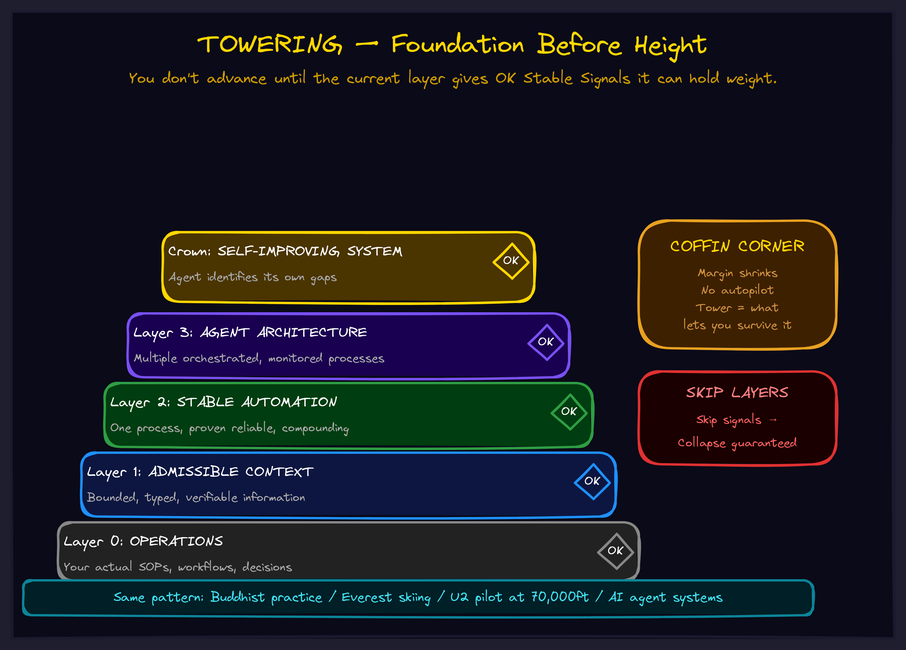

May 2026CompositionThe operator
Towering: Why Your Complexity Keeps Collapsing
You don't have an intelligence problem. You have a foundation problem. Every layer you skip becomes the floor that gives way.

The Collapse You Know
You've lived this. Your team builds something ambitious. Week one is electric. Week two, the architecture holds. Week three, someone adds a new layer and the whole thing buckles. Not because anyone got dumber. Because the layer underneath wasn't actually stable — it just hadn't been tested at that height yet.
This happens in AI agent systems. In product development. In org design. In personal growth. In every domain where complexity compounds.
The failure mode is always the same: you advanced before the current layer gave you stable signals that it could hold weight.
And the cost is always the same: collapse. Not graceful degradation. Not a gentle slide. Collapse. The kind where you don't just lose the new layer — you lose the three layers below it too.
Three Domains, One Pattern
The pattern showed up when I stopped looking at my own domain and started looking at people who navigate extreme environments for a living.
The Buddhist Practitioner
In Buddhist training, you don't skip stages. Each practice — concentration, insight, compassion — gives you signals that it's solid enough to support the next one. These aren't feelings or hunches. They're observable, verifiable states. If you jump to advanced teachings before the foundation practices are stable, the complexity of what you encounter at that height destroys you. Practitioners call this spiritual bypassing. The traditions call it premature advancement. The result is the same: the tower collapses.
The Everest Skier
At each checkpoint on the descent: equipment functioning? Body responding correctly? Route still viable? These checks aren't safety theater. They're the mechanism that tells you whether the current layer can hold your weight for the next section. Skip a check and you're building on hope instead of foundation. The mountain doesn't care how confident you feel.
The U2 Pilot
At 70,000 feet, the margin between stalling and overspeeding shrinks to almost nothing — a zone pilots call the coffin corner. No autopilot can navigate this. You need the entire tower of training, checklists, and embodied skill beneath you. The tower doesn't eliminate the coffin corner. It gets you there with enough internalized capability to survive it.
You don't advance until the current layer gives you stable signals that it can hold weight. Skip the signals and you get obliterated.
How Towering Works
Towering is the process of building layers of abstraction where each layer must provide OK Stable Signals — observable, verifiable indicators of completion — before the next layer can be constructed.
It is not just stacking. It is specifically stacking with verification at each level. The discipline of verification is what prevents collapse.
The process has a clear anatomy:
Layer 0: Your Target
The domain you want to navigate. The problem you want to solve. The system you want to build. This is where the complexity lives.
Layer 1: Analogies
Find three or more genuinely different domains that exhibit the same structural pattern as your target. Not variations on a theme — distinct fields that happen to share deep structure. Buddhism, alpine skiing, high-altitude aviation aren't related by content. They're related by the shape of how they handle complexity.
Layer 2: Extraction
Pull out what's invariant across all analogies. The shared structure that appears regardless of which domain you're looking at. If you can express it without referencing any specific domain, and it generates predictions about domains you haven't examined yet, this layer is solid.
Layer 3: Application
Map the extracted pattern back to your target domain. If this layer completes correctly, you experience something called helming — the sudden ability to see exactly what subsystems you need to build next. Before helming, the next steps are murky. After helming, they're obvious.
Crowning
When all layers are helmed and the final layer closes, the structure becomes self-maintaining. Modifications feel obvious. You're in flow. You're not fighting the structure — you're composing within it.
A programmer who's felt functional composition click knows exactly what this state is. You're not thinking about the machinery. The machinery is thinking with you.
Why This Matters for Your Business
Most AI implementations collapse because they skip layers. Someone reads about agents, buys a framework, wires it into production, and watches it hallucinate, drift, and fail. Not because the technology is bad. Because the tower wasn't built.
The layers you need look something like this:
Layer 0: Your actual operations (SOPs, workflows, decision trees) Layer 1: Admissible context (bounded, typed, verifiable information) Layer 2: Stable automation (one process, proven reliable, compounding) Layer 3: Agent architecture (multiple processes, orchestrated, monitored) Crown: Self-improving system (the agent identifies its own gaps)
Skip Layer 0 and your agents automate the wrong things. Skip Layer 1 and they hallucinate against stale docs. Skip Layer 2 and Layer 3 collapses under its own weight — because nothing underneath has been verified to hold.
Each layer must give you OK Stable Signals before you build the next one. That's the entire discipline. And it's the discipline that separates systems that compound from systems that collapse.
The Coffin Corner Is Coming
The tower doesn't remove the hard part. It gets you to the altitude where you can face the hard part with enough internalized capability to survive it.
Every business hits a coffin corner — the point where the margin for error shrinks to almost nothing and no playbook can navigate it for you. A market shift. A scaling crisis. A competitive moment where you either have the infrastructure to respond or you don't.
Autopilot cannot help you there. But if you built the tower correctly — each layer verified, each signal confirmed, each foundation solid — you arrive at the coffin corner with what you actually need: the ability to freestyle within structure.
That's not a nice-to-have. That's the difference between companies that navigate complexity and companies that get obliterated by it.
What This Looks Like in Practice
Towering is one of the frameworks we use with clients to design AI systems that don't collapse. If you want to see the full collection of frameworks and how they interconnect:
If you want to talk about what Towering looks like applied to your specific operations — where the layers are, where the signals are missing, and where the coffin corner is — we should talk.